同学们在解答数学问题时，经常遇到一些数量关系较复杂的或较隐蔽的逆向问题。用算术方法解答比较困难，如果用方程解就简便得多。它可以进一步培养我们分析问题和解决问题的能力以及抽象思维能力。列方程解应用题一般分为五步：
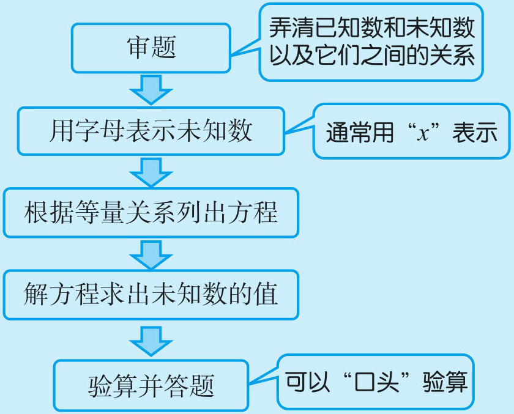
例1 东榆小学学生参加植树活动，六年级共植树186棵，比五年级植树总数的1.2倍少6棵，五年级植树多少棵？
六年级植树的棵数是五年级的1.2倍少6棵，这里是把“五年级”当成标准量，“标准量”不知道。如果用算术方法解答就要逆向思考，比较困难，用方程解答，顺向思维（五年级的1.2倍少6棵等于六年级植的棵数）较容易。这里假设五年级植树的棵数为x 棵，用到的等量关系是：五年级植的棵数×1.2-6=六年级植的棵数。
解：设五年级植树x 棵，根据题意，得
1.2x -6=186
1.2x =186+6
x =192÷1.2
x =160
验算：把x =160代入原方程，左边＝160×1.2-6=186， 右边＝186，左边＝右边，所以x =160是原方程的解。
答：五年级植树160棵。
例2 学校组织学生去秋游，一共用了13辆车，大客车每辆坐60人，小客车每辆坐40人，大客车比小客车一共多坐了280人，问：大、小客车各几辆？
题中告诉了有大、小两种客车，可以假设其中的大客车有x 辆（也可假设小客车有x 辆），则小客车有（13-x ）辆。大客车坐的人数为60x ，小客车坐的人数为(13-x )×40。再根据等量关系“大客车坐的人数-小客车坐的人数=280”就可列出方程。
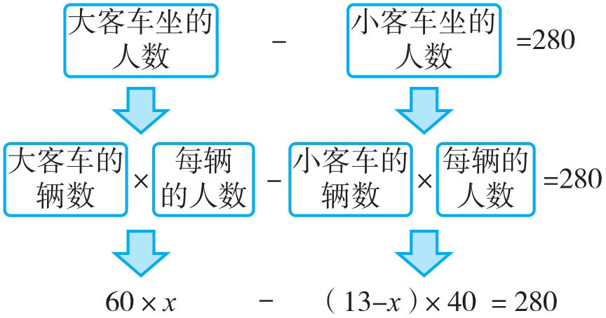
解：设大客车有x 辆，则小客车有（13-x ）辆，根据题意，得
60×x -(13-x )×40=280
60x -520+40x =280
100x =280+520
100x =800
x =8
小客车：13-8=5（辆）
答：大客车有8辆，小客车5辆。
例3 少年宫航模组的同学去划船，他们租了一些船，如果每船坐7人，则余2人；如果每船坐8人，则船上还有4个空位。航模组共有学生多少人？
无论每船坐7人还是8人，都隐藏着两个不变的量：一是航模组的人数不变，二是船的只数不变。若假设航模组的人数为x 人，就以船数一定的等量关系建立方程：(x -2)÷7=(x +4)÷8；若假设船有x 只，就以人数一定的等量关系建立方程：7x +2=8x -4。为使计算简便，一般假设船数有x 只。
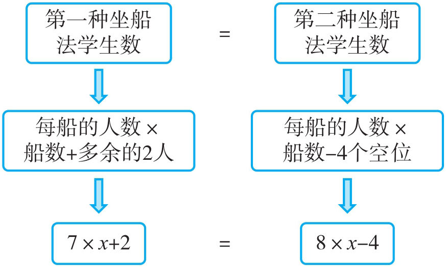
解：设共租了x 只船，根据题意，得
7x +2=8x -4
2+4=8x -7x
x =6
学生人数：6×7+2=44（人）
答：航模组共有学生44人。
例4 在一次运动会开幕式中，共有780人参与排练。其中高中生人数比初中生人数的6倍还多30人，初中生人数又是小学生人数的2倍，参加这次排练的高中生、初中生、小学生各多少人？
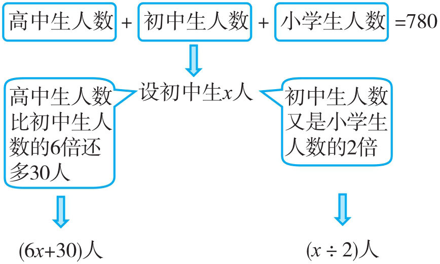
解：设初中生人数为x 人，则高中生人数为（6x +30）人，小学生人数为
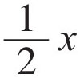
人。6x +30+x +
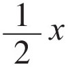
=780人。7.5x =780-30
x =750÷7.5
x =100
高中生人数：6×100+30=630（人）
小学生人数：100÷2=50（人）
答：高中生有630人，初中生有100人，小学生有50人。
例5 同学们到郊区野炊。一个学生到老师那里去领碗，以下是他们的对话。老师：需要多少个碗？学生：要领55个。老师：共有多少人吃饭？学生：一人一个饭碗，两人一个菜碗，三人一个汤碗。算一算，有多少人吃饭？
设有x 人吃饭，一人一个饭碗，饭碗x 个；两人一个菜碗，菜碗
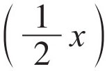
个；三人一个汤碗，汤碗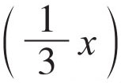
个。再根据等量关系“饭碗数＋菜碗数＋汤碗数=55”写出方程求解。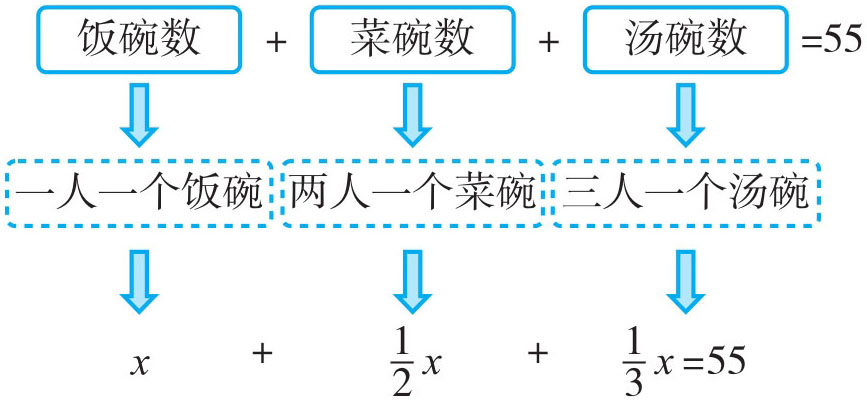
解：设有x 人吃饭，根据题意，得
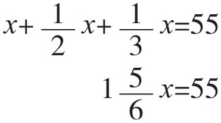
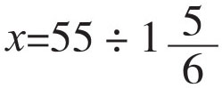
x =30
答：有30人吃饭。
1．彭阿姨到超市买了香蕉和菠萝各3千克，共用去30元，香蕉每千克5.5元，菠萝每千克多少元？
将题中的等量关系填写如下：
①
②
③
2．洋洋有500元压岁钱，他的压岁钱比林林的2倍多20元，林林有多少压岁钱？
3．今年，奶奶的年龄是小丽的7倍，小丽再过54年才与奶奶今年的年龄相当，小丽和奶奶今年各多少岁？
4．甲、乙两城相距540千米。一辆货车由甲城开往乙城，每小时行60千米，一辆小车由乙城开往甲城，3.5小时后两车还相距50千米。小车每小时行多少千米？
5．韩勇和韩睿带了同样多的钱去逛服装店。韩勇花了330元买了一双运动鞋，韩睿花了190元买了一套运动装，这时，韩睿的钱数是韩勇的3倍，韩勇和韩睿各带了多少钱？
6．
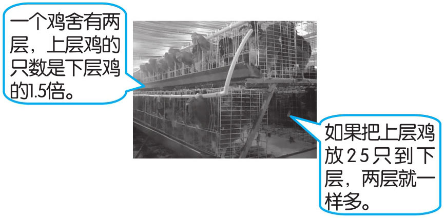
上、下层各有多少只鸡？
7．周娟阿姨去水果批发市场进货，所带的钱正好能买20千克草莓或25千克苹果。已知每千克草莓比每千克苹果贵1.25元，周娟阿姨一共带了多少钱？
8．某班学生组织春游，男生人数是女生人数的2倍。在休息时，老师组织学生做游戏，该游戏每轮要有5个男生、4个女生参加。那么经过几轮后女生刚好走完，而男生还剩下21人？
9．龚斌以分期付款的方式买一台手提电脑。现有两种付款方式：一种是第一个月付款1250元，以后每月付款200元；另一种是前一半时间每月付350元，后一半时间每月付200元。两种付款方式总款数及时间都相同。计算这台电脑的价钱？（提示：设付款的时间为x 个月）